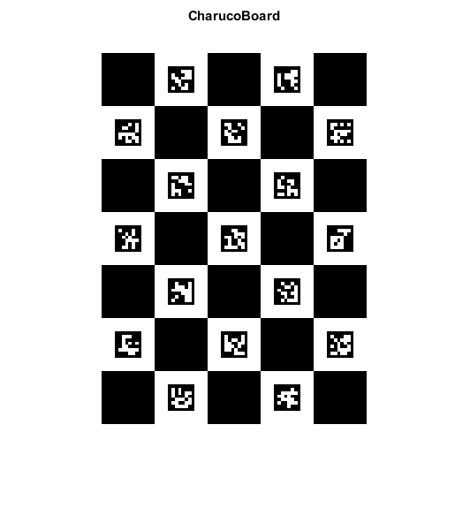

ChArUco Board Image Demo
This example shows how to create a ChArUco board image.
Sources:
Contents
Board
% params squaresX = 5; % Number of squares in X direction squaresY = 7; % Number of squares in Y direction squareLength = 60; % Square side length (in pixels) markerLength = 30; % Marker side length (in pixels) dictionaryId = '6x6_250'; % dictionary id margins = squareLength - markerLength; % Margins size (in pixels) borderBits = 1; % Number of bits in marker borders imageSize = [squaresY, squaresX] .* squareLength + 2 * margins; % create board dictionary = {'Predefined', dictionaryId}; board = {squaresX, squaresY, squareLength, markerLength, dictionary};
Display
% show created board boardImage = cv.drawCharucoBoard(board, fliplr(imageSize), ... 'MarginSize',margins, 'BorderBits',borderBits); imshow(boardImage), title('CharucoBoard') % save image imwrite(boardImage, fullfile(tempdir(),'CharucoBoard.png'));